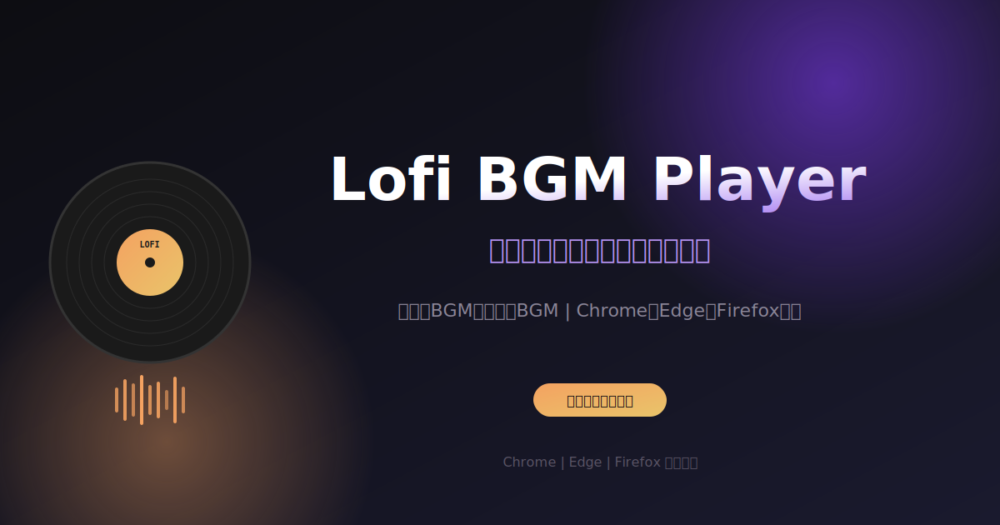

OGP画像プレビュー (1200x630)

PNGに変換する方法
- オンラインツール（推奨）:
svgtopng.com や
cloudconvert.com で変換
- ブラウザで保存:
この画像を右クリック → 「名前を付けて保存」で og-image.png として保存
（ブラウザによってはPNG形式で保存可能）
- Macのターミナル:
qlmanage -t -s 1200 -o . og-image.svg
- ImageMagick（コマンドライン）:
convert -density 150 og-image.svg og-image.png
- Inkscape（無料ソフト）:
SVGを開いて「Export PNG Image」で書き出し